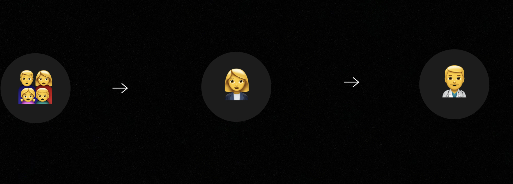
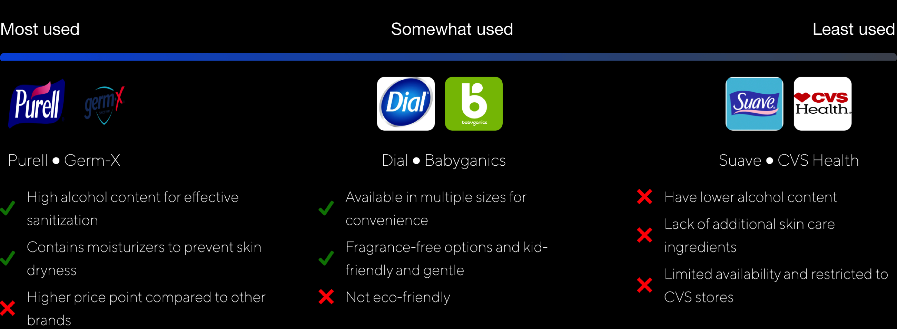

YTY PLC is a pioneering force in Ethiopia's business landscape. As YTY continues to expand, the Lucy Cosmetics branch stands to show commitment to delivering locally sourced and produced products. For my internship role, I conducted market analysis and research to inform a campaign strategy for the launch of a new line of hand sanitizers. Our goal was to tap into new market opportunities and address the increased demand for hygiene products during the COVID-19 pandemic.
To thoroughly comprehend the context and intricacies of YTY's hand sanitizer initiative, specific key terms related to the four Ps of marketing are defined:
Product
Price
Place
Promotion
A health and safety essential, particularly crucial during the Coronavirus pandemic. This term encompasses the characteristics, quality, and usability of the hand sanitizer.
The cost at which the hand sanitizer will be sold to consumers. It includes considerations of production expenses, market trends, and profitability margins while looking at tiered pricing strategies.
Focus on ensuring wide accessibility and convenience, potentially leveraging existing distribution networks, and considering innovative channels to reach consumers effectively during the pandemic.
Developing campaigns to inform the public about the availability and importance of hand sanitizer, emphasizing the company's commitment to public health and safety, and engaging in CSR initiatives.
Target Users
The target users for the hand sanitizer initiative by YTY are broadly categorized into diverse segments of the population, each with distinct needs and preferences. This stratification ensures a more focused and effective approach in marketing and distribution.
The target audience was divided up into three stages
:

General Public with Basic Needs
Corporate Clients and Workplaces
Healthcare and Educational Institutions
User Interviews
Our team carried out user interviews, encompassing individuals from each identified segment, to gain deeper insights into their preferences and usage patterns regarding hand sanitizers. Explore the questions to discover more!
We also surveyed other competitive, non-locally sourced hand sanitizer products to determine which features are most important and which features prevent customers from re-use. This was used to inform which marketing points and USPs to emphasize in our campaign strategy.

Pain Points
From market research and customer feedback, we can categorize the common pain points experienced by users of hand sanitizers into four main categories:
Efficacy
Accessibility
Usability
Engagement
Users find it difficult to discern which hand sanitizers are effective against a broad range of pathogens, including viruses, due to unclear labeling and marketing.
There is a lack of availability of hand sanitizers in convenient locations, both in public spaces and in stores where they are frequently out of stock.
Regular use of hand sanitizers can be harsh on skin, causing dryness and irritation, which deters consistent use.
As immediate health crises begin to wane, people perceive hand sanitizer as less necessary, impacting their regular buying and usage patterns
02. Drafting Solutions and Ideation
How Might We?
Now that our team had a better idea of user pain points, we drafted some ideas on solutions for the 4 categories of pain points.
Efficacy
Accessibility
Usability
Engagement
Transparency and Education Campaigns: Development of marketing materials that clearly explain the effectiveness of the hand sanitizer, including lab results and certifications. Utilization of infographics, videos, and blog posts to educate consumers on how the product protects against pathogens.
Customer and Expert Testimonials: Leveraging testimonials from satisfied customers and endorsements from health professionals to build trust. Sharing real-life stories and expert opinions on the efficacy of the hand sanitizer can help reassure potential customers about its reliability.
Strategic Partnerships for Wider Distribution:
Partnerships with a variety of retailers, including online platforms, convenience stores, and pharmacies, to ensure the hand sanitizer is easily accessible. Highlighting these partnerships in marketing efforts to inform customers where they can find the product.
Location-Based Marketing:
Utilization of social media and online advertising to target customers in areas where the product is available. Implementation of location-based promotions or alerts to drive foot traffic to stores or online platforms where the hand sanitizer can be purchased
Highlighting Product Features:
Focus on marketing the gentle, skin-friendly aspects of the hand sanitizer. Emphasizing ingredients like aloe vera or glycerin that moisturize the skin, and highlighting these benefits in packaging, advertisements, and social media.
Free Samples or Trial-Sized Products:
Offering free samples or selling trial-sized products to allow customers to experience the gentle formula firsthand. Positive first-hand experience can mitigate concerns over dryness and irritation, encouraging more consistent use.
Interactive and Educational Campaigns:
Creating engaging online campaigns that educate consumers on the continued importance of hand hygiene, even as immediate health threats appear to subside. Using quizzes, interactive videos, and challenges to keep users engaged and informed.
Community Initiatives:
Launching initiatives that involve community engagement, such as donating a portion of sales to public health education or setting up hand sanitizer stations in public areas. These actions not only increase brand visibility but also reinforce the importance of hand hygiene, keeping the product relevant.


.png)